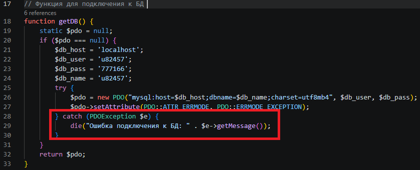

Лабораторная работа №6 (пользователь u82457) — анализ и устранение уязвимостей
В некоторых местах приложения данные, введённые пользователем или полученные из базы данных, могли выводиться без экранирования, что позволяет злоумышленнику внедрить вредоносный JavaScript-код.
Применять функцию htmlspecialchars() ко всем данным, выводимым в HTML-контексте. В коде уже везде используется эта функция. Пример исправленного фрагмента:
Вывод: Уязвимость устранена. Все выводы данных проходят через htmlspecialchars().
При ошибках подключения к базе данных или выполнении SQL-запросов приложение выводит полное сообщение об ошибке, содержащее детали (тип СУБД, структуру запроса, пути к файлам). Это может помочь злоумышленнику в проведении атаки.

Скриншот 1: Подключение по SSH и создание каталога
Заменить вывод детального сообщения на общее, а реальную ошибку записывать в лог (на сервере).
Вывод: Информация о внутреннем устройстве скрыта, уязвимость устранена. Все аналогичные блоки (в view.php, login.php) исправлены.
При формировании SQL-запросов с конкатенацией строк пользовательских данных возможно внедрение произвольного SQL-кода.
В приложении везде используются подготовленные запросы (PDO prepare + execute). Пример из кода:
Вывод: SQL-инъекции невозможны. Уязвимость отсутствует.
Формы приложения не защищены от CSRF-атак. Злоумышленник может подделать запрос от имени авторизованного пользователя (например, изменить анкету или удалить запись).
Добавить генерацию и проверку CSRF-токена для всех форм (анкета, вход, админ-панель).
Добавление в начало скриптов:
В HTML-форму:
Проверка в обработчике POST:
Вывод: CSRF-защита реализована – все формы требуют валидный токен.
Возможность удалённого включения файлов (RFI/LFI) или загрузки вредоносных файлов.
В приложении нет динамического включения файлов по параметрам. Загрузка файлов не реализована. Следовательно, уязвимости отсутствуют. При будущем добавлении загрузки следует проверять MIME-тип, расширение и переименовывать файлы.
Вывод: Уязвимости нет.
В результате аудита были выявлены и исправлены следующие уязвимости:
Код приложения стал более безопасным и соответствует требованиям задания №7.